REPARACIÓN DE LA UNIDAD
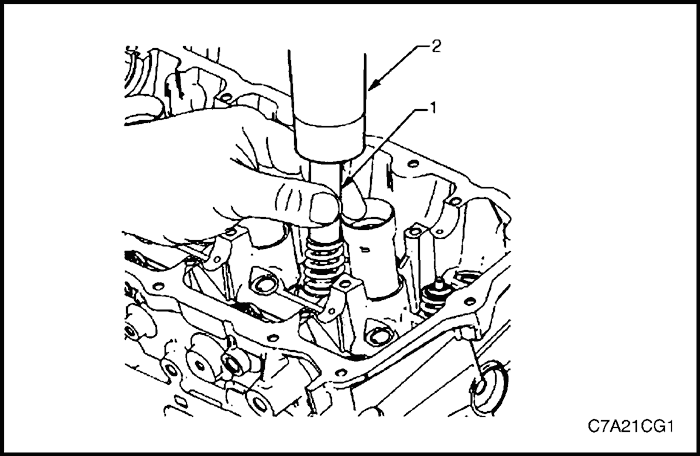


Culata y componentes de la serie de válvulas
Desmontaje
Precaución: Durante el siguiente paso asegúrese de que las cabezas de las válvulas no están en contacto con nada para evitar daños o deformaciones.
- Desmonte el conjunto de la culata. Consulte el apartado "Conjunto de la culata" en esta sección.
- Use un casquillo hondo (1) del tamaño adecuado y un martillo de plástico (2) para golpear ligeramente el retenedor de muelle de válvula a fin de aflojar los collares de válvula.
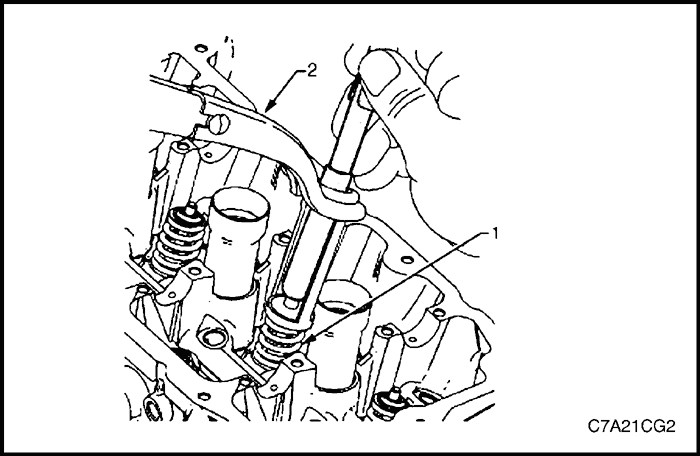
Los muelles de válvula comprimidos (1) están a gran tensión contra el compresor de muelles de válvula (2). Los muelles de válvula que no estén bien comprimidos, o que se suelten del compresor, pueden salir despedidos de éste con gran fuerza. Tenga cuidado al comprimir o soltar el muelle de válvula del compresor de muelles y al montar o desmontar las chavetas de los vástagos de válvula. Si no se tiene cuidado, pueden producirse lesiones personales.
Precaución: No comprima los muelles de válvula a menos de 24,0 mm El contacto entre el retenedor de muelle de válvula y el retén de aceite del vástago de la válvula puede provocar daños potenciales en el retén de aceite.
- Comprima el muelle de válvula (1) con el compresor de muelles, herramienta nº J-8062 (2), y un adaptador, herramienta nº EN-46119.
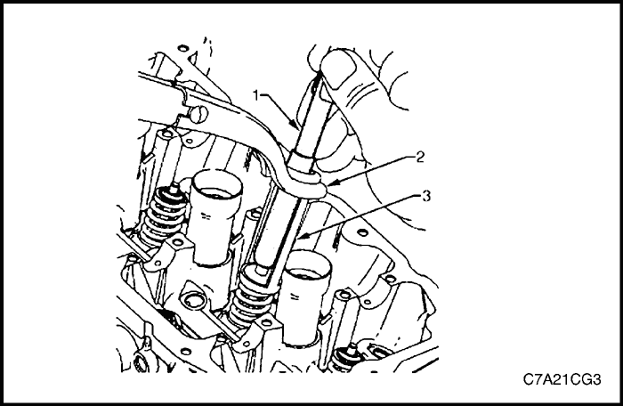
- Desmonte los collares de válvula con la herramienta nº EN-46117 (1).
- Desmonte el compresor de muelles de válvula (2) y el adaptador (3).
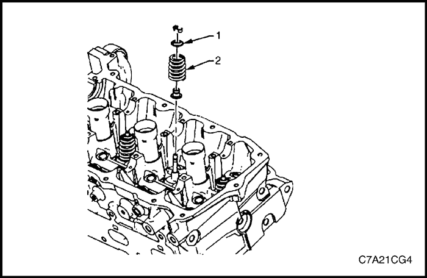
- Desmonte el retenedor del muelle de válvula (1).
- Desmonte el muelle de válvula (2).
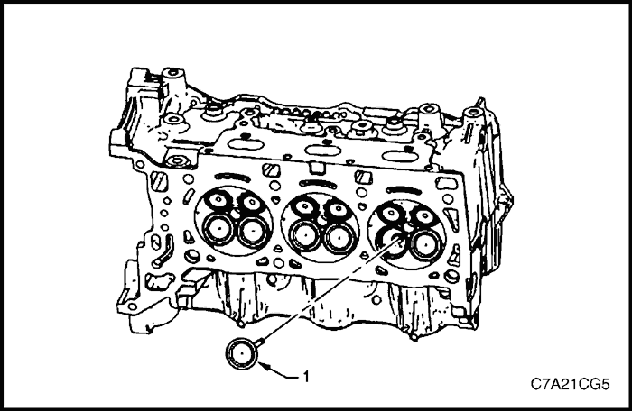
- Desmonte las válvulas (1).
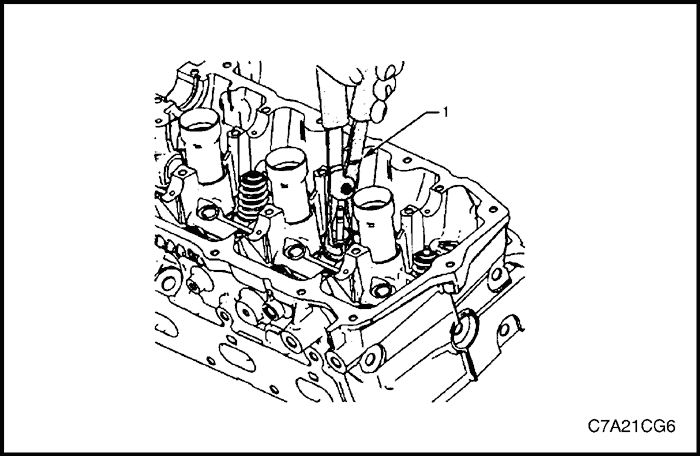
Precaución: Nunca vuelva a usar el mismo retén de aceite del vástago de válvula.
- Desmonte el retén de aceite del vástago de válvula con la herramienta nº EN-46116 y deséchelo.
- Repita estos procedimientos para el resto de válvulas.
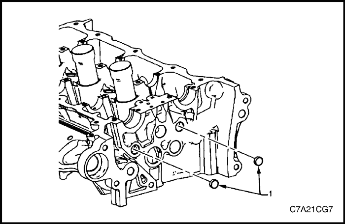
- Quite los tapones de expansión del conducto de aceite de la culata (1).
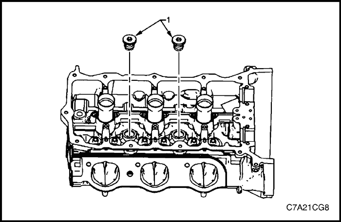
- Quite los tapones roscados del refrigerante de la culata (1).
Limpiar
Precaución: Debido a la aleación de aluminio con la que está fabricada la culata, no deben utilizarse cepillos de alambre ni rascadores de acero durante el proceso de limpieza, ya que se podrían dañar las superficies de estanqueidad. Use un rascador de madera o plástico como alternativa.
- Elimine el sellante para roscas viejo, el material de junta o el sellante con un rascador de madera o plástico disponible en comercios.
- Limpie las superficies de la culata con disolvente no corrosivo.
- Sople todos los conductos de aceite con aire comprimido.
- Elimine todos los depósitos de carbonilla de las cámaras de combustión.
- Limpie todos los residuos o sustancias acumuladas en las cavidades de los empujadores.
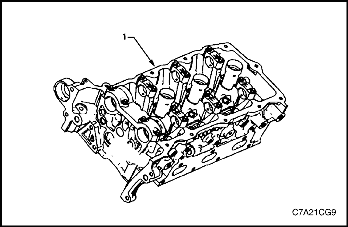
Inspección
Inspección visual
- Compruebe si las superficies de los cojinetes de los árboles de levas de la culata (1) presentan las siguientes anomalías:
- Picado o rayado excesivo,
- decoloración por sobrecalentamiento y
- deformación por desgaste excesivo.
- Si se detecta alguna de las anomalías mencionadas en las superficies de los cojinetes de los árboles de levas, sustituya la culata. No mecanice las muñequillas de los cojinetes de los árboles de levas.
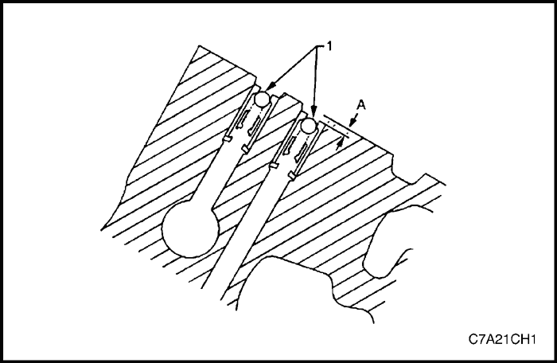
- Revise la culata y compruebe las siguientes anomalías:
- Grietas, daños o depósitos en las cámaras de combustión.
- Residuos en los conductos de aceite. Limpie los conductos hasta eliminar todos los residuos.
- Fugas de refrigerante o daño en la superficie de estanqueidad de la cara de junta. Si hay fugas de refrigerante, mida el alabeo de la superficie.
- Si hay rebabas o defectos que pudieran afectar negativamente a la estanqueidad de una junta nueva de cadena secundaria de árbol de levas, sustituya la culata. No mecanice las muñequillas de los cojinetes de los árboles de levas.
- Daños en las superficies de las juntas.
- Daños en los orificios roscados de tornillos.
- Zonas quemadas o desgastadas en la cámara de combustión.
- Grietas en las salidas de escape y en las cámaras de combustión.
- Grietas externas en los conductos de agua.
- Restricciones en los conductos de admisión o escape.
- Obstrucciones en los conductos del sistema de refrigeración.
- Tapones oxidados, dañados o con fugas.
- Si la culata está agrietada o dañada, debe ser sustituida. No se recomienda soldar o reparar la culata.
- Compruebe las válvulas de retención (1) de alimentación de aceite de los actuadores de posición de los árboles de levas para ver si están bien colocadas en la culata. La válvula de retención de alimentación de aceite del actuador de posición del árbol de levas debe estar a nivel hasta 2 mm por debajo de la superficie de junta de la culata (A).
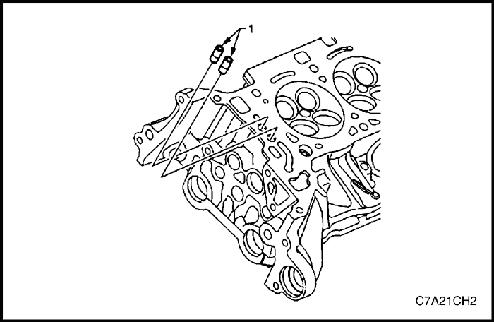
- Las válvulas de retención (1) dañadas, obstruidas o taponadas pueden sustituirse con el extractor/instalador de bola de retención de actuador de posición de árbol de levas, herramienta nº EN-46122.
Medición de culata
Holgura de muñequilla de árbol de levas
- Monte la tapa del cojinete del árbol de levas en la culata sin el árbol de levas.
- Coloque los tornillos de la tapa del árbol de levas y apriételos hasta 10 N•m (89 lb-pulg.).
- Mida los cojinetes del árbol de levas con un micrómetro de interiores.
- Reste el diámetro de la muñequilla del árbol de levas al diámetro del cojinete del árbol de levas. Esto dará la holgura de funcionamiento. Si la holgura de funcionamiento supera las especificaciones pero las muñequillas de árbol de levas están dentro de las especificaciones, sustituya la culata.
Alineación de muñequilla de árbol de levas
- Inspeccione las superficies de los cojinetes de árboles de levas en culata en busca de imperfecciones o arañazos que pudieran impedir holguras correctas en los árboles de levas. Repare las imperfecciones o arañazos de menor importancia.
- Monte los árboles de levas en la culata.
- Monte las tapas de cojinete de los árboles de levas.
- Coloque los tornillos de la tapa del árbol de levas y apriételos hasta 10 N•m (89 lb-pulg.).
- Asegúrese de que los árboles de levas giran libremente en la culata. Si el árbol de levas no gira libremente, sustituya la culata.
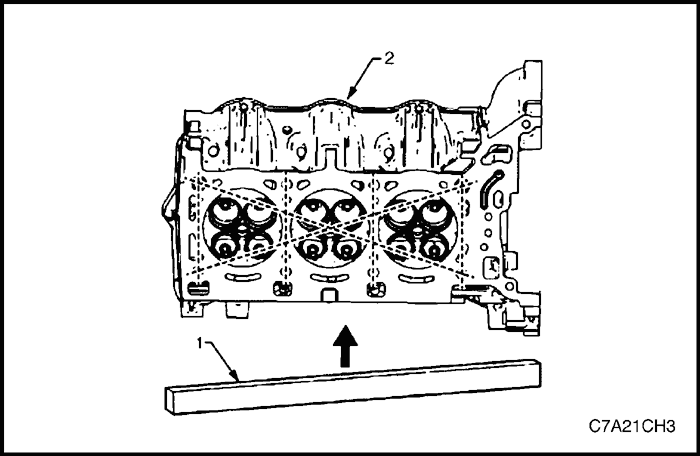
Inspección de la planitud de la superficie de junta
- Asegúrese de que las caras de junta del bloque del motor están limpias y libres de material de junta.
- Inspeccione la superficie en busca de imperfecciones o arañazos que pudieran impedir una correcta estanqueidad de la junta de la culata.
- Coloque una regla (1) diagonalmente a lo largo de la superficie de la cara de junta de la culata (2).
- Mida la holgura entre el borde recto y la superficie de base de la culata utilizando una galga en cuatro puntos a lo largo del borde recto.
- Si el alabeo es inferior a 0,05 mm, no hay que corregir la superficie de junta de la culata.
- Si el alabeo está entre 0,05±0,20 mm o se detectan imperfecciones o arañazos que pudieran impedir una correcta estanqueidad de la junta de la culata, hay que corregir la superficie de junta de la culata.
- Si hubiera que corregir la superficie, lo máximo que se puede quitar es 0,25 mm.
- Si hubiera que quitar más de 0,25 mm de superficie de junta de la culata, debe sustituirse la culata.
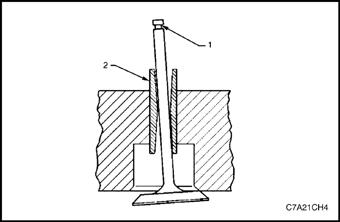
Medición de guía de válvula
- Mida la holgura entre el vástago (1) y la guía (2) de la válvula. Una holgura excesiva entre el vástago y la guía de la válvula puede provocar un exceso de consumo de aceite y, también, una rotura de la válvula. Una holgura insuficiente puede dar lugar a un funcionamiento ruidoso y problemático de la válvula y perturbar la suavidad del conjunto del motor.
- Acople un comparador a la culata en la rampa de la tapa de los árboles de levas.
- Sitúe el comparador de modo que el movimiento del vástago de la válvula de lado a lado, transversalmente respecto a la culata, provoque un movimiento directo del vástago del comparador. El vástago del comparador debe estar en contacto con el de la válvula justo encima de la guía de válvula.
- Deje caer la cabeza de válvula unos 0,064 mm fuera del asiento de válvula.
- Haga poca presión al mover el vástago de la válvula de lado a lado para obtener una lectura de holgura.
- Si la holgura de la válvula es superior a la especificada y no se logran cumplir las especificaciones con un nuevo vástago de válvula de diámetro estándar, se puede aumentar el tamaño de la guía de válvula 0,075 mm con la ayuda de un escariador de guías de válvula, herramienta nº J-42096, o 0,375 mm con el escariador EN-46120. Hay dos tamaños de sobremedidas para vástagos de válvula disponibles para servicio.
- El desgaste de la guía de válvula de 10 mm en su parte inferior no es lo suficientemente importante como para afectar al funcionamiento normal.
- Si con el aumento de las dimensiones de la guía no se consiguen cumplir las especificaciones, sustituya la culata.
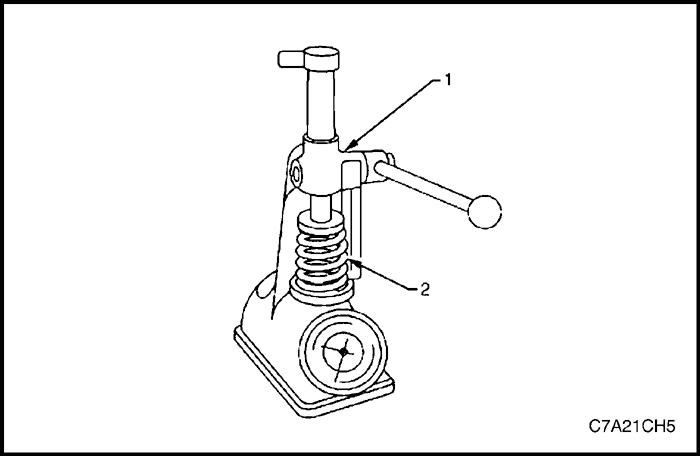
Inspección y medición de muelles de válvula
- Mida la holgura entre el vástago (1) y la guía (2) de la válvula. Una holgura excesiva entre el vástago y la guía de la válvula puede provocar un exceso de consumo de aceite y, también, una rotura de la válvula. Una holgura insuficiente puede dar lugar a un funcionamiento ruidoso y problemático de la válvula y perturbar la suavidad del conjunto del motor.
- Acople un comparador a la culata en la rampa de la tapa de los árboles de levas.
- Sitúe el comparador de modo que el movimiento del vástago de la válvula de lado a lado, transversalmente respecto a la culata, provoque un movimiento directo del vástago del comparador. El vástago del comparador debe estar en contacto con el de la válvula justo encima de la guía de válvula.
- Deje caer la cabeza de válvula unos 0,064 mm fuera del asiento de válvula.
- Haga poca presión al mover el vástago de la válvula de lado a lado para obtener una lectura de holgura.
- Si la holgura de la válvula es superior a la especificada y no se logran cumplir las especificaciones con un nuevo vástago de válvula de diámetro estándar, se puede aumentar el tamaño de la guía de válvula 0,075 mm con la ayuda de un escariador de guías de válvula, herramienta nº J-42096, o 0,375 mm con el escariador EN-46120. Hay dos tamaños de sobremedidas para vástagos de válvula disponibles para servicio.
- El desgaste de la guía de válvula de 10 mm en su parte inferior no es lo suficientemente importante como para afectar al funcionamiento normal.
- Si con el aumento de las dimensiones de la guía no se consiguen cumplir las especificaciones, sustituya la culata.
Inspección
- Limpie los muelles de válvula en disolvente.
- Seque los muelles de válvula con aire comprimido.
- Compruebe si los muelles de válvula tienen espiras o extremos de espiras rotos.
Medición
- Use un comprobador de muelles de válvula disponible en comercios para medir la tensión de los muelles.
Precaución: No utilice suplementos para aumentar la presión de los muelles. El uso de suplementos puede hacer que el muelle de válvula toque fondo antes de que el lóbulo del árbol de levas alcance su elevación máxima.
- Si se detecta una presión de muelle baja, sustituya los muelles de válvula.
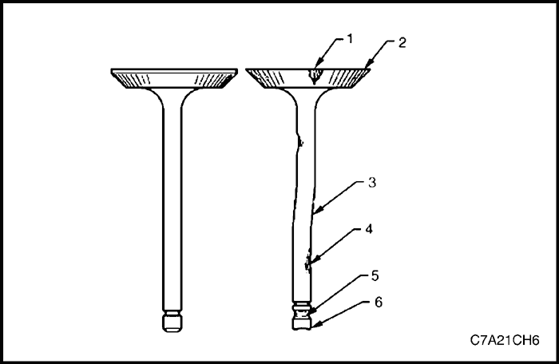
Rectificado de válvulas y asientos
Limpieza de válvulas
Precaución: No utilice un cepillo de alambre para limpiar ninguna parte del vástago de la válvula. El vástago de la válvula está cromado para mejorar sus características contra el desgaste. Si se cepilla el vástago, puede eliminarse el cromado.
- Use un cepillo de cerdas suaves para limpiar la acumulación de carbonilla en la cabeza de válvula.
- Limpie a fondo la válvula con disolvente y séquela.
Inspección visual de válvulas
- Revise la válvula desde la cabeza hasta la puntas y compruebe si presenta las siguientes anomalías:
- depósitos en la zona del asiento de la válvula (1)
- falta de margen en la válvula (2)
- curvado del vástago de la válvula (3)
- depósitos o desgaste excesivo del vástago (4)
- ranuras de chaveta de válvula desgastadas (5) y
- punta de la válvula desgastada (6).
- Sustituya la válvula si se da alguno de estos problemas.
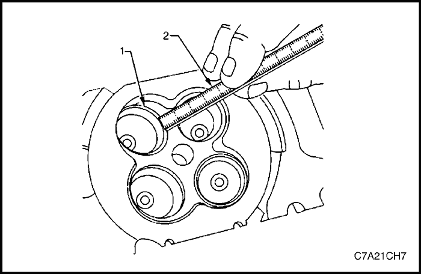
Medición de la anchura del asiento de las válvulas
- Use una regla (2) para medir la anchura del asiento de válvula (1) en la culata.
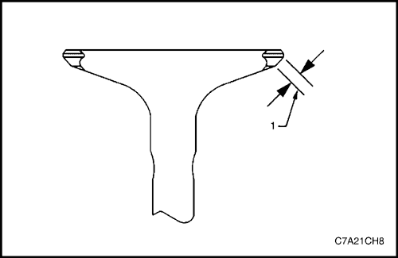
- Mida la anchura del asiento en la cara de válvula (1) con una regla adecuada.
Precaución: La zona de contacto del asiento debe tener al menos 0,5 mm desde el diámetro exterior (margen) de la válvula. Si la zona de contacto está demasiado cerca de los márgenes, debe remodelarse el asiento para alejar del margen la zona de contacto.
- Si las anchuras del asiento son aceptables, compruebe la redondez del asiento de la válvula.
- Si la anchura del asiento no es aceptable, rectifíquelo de modo que el asiento vuelva a cumplir las especificaciones. Una anchura del asiento correcta es fundamental para conseguir la cantidad adecuada de disipación térmica de la válvula.
Medición de la redondez del asiento de las válvulas
- Mida la redondez del asiento de válvula con la ayuda de un comparador acoplado a un piloto cónico que se monta sobre la guía. El piloto debe tener una pequeña ligadura al montarse en la guía.
Precaución: Debe usarse un piloto del tamaño apropiado. No emplee pilotos de diámetro regulable. Los pilotos regulables pueden dañar las guías de válvula.
- Si el asiento de la válvula sobrepasa la especificación de redondez, rectifique la válvula y el asiento.
- Si se usan válvulas nuevas, la redondez de sus asientos no deben superar los 0,05 mm.
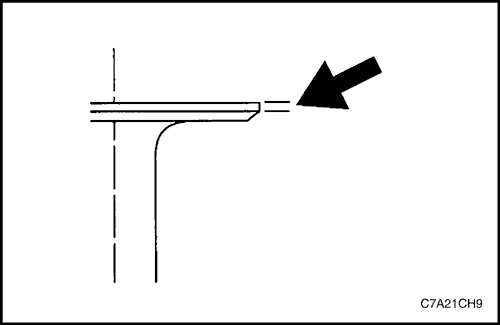
Medición de márgenes de válvula
- Mida el margen de la válvula con una regla adecuada.
- Si los márgenes de las válvulas no cumplen las especificaciones, sustituya las válvulas.
- Si los márgenes de las válvulas están dentro de las especificaciones y no hay que corregir sus caras, compruebe la concentricidad de los asientos de las válvulas.
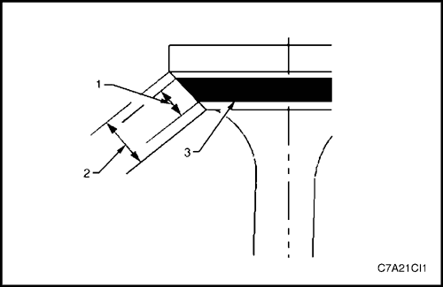
Medición de la concentricidad entre válvula y asiento
Con la comprobación de la concentrad entre válvula y asiento se determina si la válvula y el asiento cierran correctamente.
Mida la cara y el asiento de válvula para asegurarse de que la estanqueidad de la válvula está bien.
- Recubra ligeramente la cara de válvula con pigmento azul (3).
- Monte la válvula en la culata.
- Gire la válvula contra el asiento con presión suficiente como para llevarse el pigmento.
- Desmonte la válvula de la culata.
- Si la cara de válvula es concéntrica respecto al vástago, proporcionando una estanqueidad correcta, quedará una marca continua (1) alrededor de toda la cara (2).
Precaución: La marca de desgaste debe tener al menos 0,5 mm desde el margen de la válvula. Si la marca de desgaste está demasiado cerca del margen, debe remodelarse el asiento para alejar del margen la zona de contacto.
- Si la cara no es concéntrica respecto al vástago, la marca no será continua alrededor de la cara de válvula. Debe corregirse la cara de la válvula o sustituirse la válvula y remodelarse el asiento.
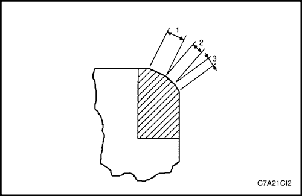
Procedimiento de remodelación de válvulas y asientos
Si la anchura, redondez o concentricidad de los asientos de válvula no cumplen las especificaciones, rectifique los asientos para garantizar una disipación térmica correcta y evitar la acumulación de carbonilla en los asientos.
Si hiciera falta remodelar el asiento de válvula, corrija su cara, a no ser que se utilice una válvula nueva.
- Rectifique los asientos de válvula (2) según la especificación de ángulo correcta.
- Siguiendo la especificación de ángulo correcta, rectifique y libere los asientos de válvula (1) para colocar adecuadamente la superficie de asiento (2) en la válvula.
- Siguiendo la especificación de ángulo correcta, rectifique y reduzca los asientos de válvula (3) para disminuir la anchura de los asientos de acuerdo con las especificaciones.
- Si se usa la válvula original, rectifique la válvula según las especificaciones. Tras el rectificado, vuelva a medir el margen de la válvula. Sustituya la válvula si el margen no cumple las especificaciones. Las válvulas nuevas no necesitan rectificarse.
- Al rectificar válvulas y asientos, elimine el mínimo material posible. Si se corta el asiento de la válvula, disminuye la presión del muelle de válvula.
- Monte la válvula en la culata.
Precaución: Si se usan válvulas con la cara corregida, esmerile las válvulas en los asientos con un compuesto de rectificado fino. Las operaciones de corrección de cara y asiento deberían dejar las superficies lisas y a nivel de modo que se requiera el mínimo lapeado. Un lapeado excesivo rayará la cara de válvula e impedirá un buen asiento al calentarse.
Nota:
- Antes del montaje final, use disolvente y aire comprimido para limpiar de la válvula y del asiento el compuesto de lapeado que quede.
- Si se van a instalar más válvulas, no las esmerile bajo ningún concepto.
- Una vez conseguida la anchura de asiento correcta en la culata, mida la altura del vástago de la válvula.
- Si la altura del vástago es aceptable, compruebe la concentricidad de los asientos.
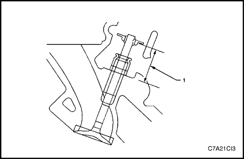
Procedimiento de medición de altura de vástagos de válvula
Precaución: Para determinar la medición de la altura del vástago de una válvula, mida desde el asiento del muelle hasta el retenedor del muelle de válvula.
- Monte la válvula en la guía.
- Asegúrese de que la válvula descansa sobre su asiento.
- Monte el retén de aceite del vástago de válvula.
- Monte el retenedor y las chavetas del vástago de las válvula.
- Mida la distancia (1) entre la culata y la parte inferior del retenedor de muelle de válvula.
- Si se supera la especificación máxima de altura, deberá montarse una válvula nueva y habrá que volver a medir la altura del vástago.
Precaución:
- No rectifique la punta del vástago de válvula. La punta de la válvula está endurecida y su rectificación eliminará la superficie endurecida, provocando un desgaste prematuro y posibles daños al motor.
- No utilice suplementos para ajustar la altura de los vástagos de válvula. El uso de suplementos puede hacer que el muelle de válvula toque fondo antes de que el lóbulo del árbol de levas alcance su elevación máxima, pudiendo dañar el motor.
- Si la altura del vástago de válvula sigue sobrepasando la especificación máxima de altura, debe sustituirse la culata.
Montaje
- Coloque los tapones roscados del refrigerante de la culata (1).
Apretar
Apriete los tapones roscados del refrigerante de la culata hasta 31 N•m (23 lb-pie).
- Coloque los tapones de expansión del conducto de aceite de la culata (1).
Precaución: Nunca vuelva a usar el mismo retén de aceite del vástago de válvula. Utilice siempre retenes nuevos al montar la culata.
- Acople los retenes de aceite de los vástagos de válvula en las guías con la herramienta nº EN-46116 (1).
Precaución: Durante el montaje sólo debe aplicarse fuerza a la zona de contacto del muelle de válvula del nuevo retén de aceite del vástago.
- Empuje y tuerza el retén de aceite del vástago en su sitio sobre la guía de válvula hasta que el retén quede totalmente bloqueado en la guía con la ayuda de la herramienta nº EN-46116.
- Lubrique el vástago y la guía de la válvula con aceite de motor limpio.
Precaución: El retén de aceite del vástago de válvula no debe aflojarse de la guía al montar la válvula (1).
- Introduzca la válvula en su guía hasta que toque el asiento de válvula.
- Coloque el muelle de válvula (2) en su asiento (1).
- Coloque el retenedor de muelle de válvula en el muelle.
Los muelles de válvula comprimidos (1) están a gran tensión contra el compresor de muelles de válvula (2). Los muelles de válvula que no estén bien comprimidos, o que se suelten del compresor, pueden salir despedidos de éste con gran fuerza. Tenga cuidado al comprimir o soltar el muelle de válvula del compresor de muelles y al montar o desmontar las chavetas de los vástagos de válvula. Si no se tiene cuidado, pueden producirse lesiones personales.
Precaución: No comprima los muelles de válvula a menos de 24,0 mm El contacto entre el retenedor de muelle de válvula y el retén de aceite del vástago de la válvula puede provocar daños potenciales en el retén de aceite.
- Comprima el muelle de válvula con el compresor de muelles, herramienta nº J-8062, y un adaptador, herramienta nº EN-46119.
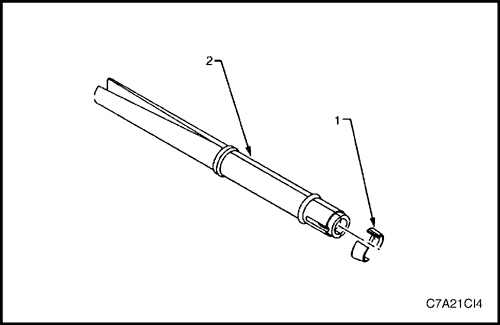
Precaución: Asegúrese de que los collares de válvula (1) se colocan en la dirección correcta en la herramienta nº EN-46117 (2). Los collares de válvula deben montarse con el extremo cónico mirando hacia el retén del vástago.
- Con el muelle comprimido, monte los collares de válvula en la herramienta nº EN 46117.
- Coloque los collares en su sitio empujando la herramienta (1) hacia abajo y liberando tensión del compresor de muelles de válvula (2).
- Verifique que los collares de válvula están montados colocando un trapo sobre la punta de válvula y golpeando ligeramente con una maza de goma. Los collares de válvula y el muelle deben permanecer en su sitio.
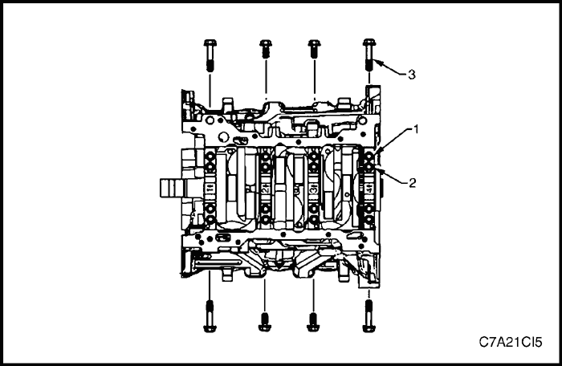
Cojinetes de bancada y cigüeñal
Procedimiento de desmontaje
- Desmonte el conjunto del motor.
- Desmonte los dos conjuntos de culata.
- Desmonte el conjunto del cárter del aceite.
- Desmonte los conjuntos de pistón y biela.
- Desmonte el conjunto de la bomba de aceite.
- Desmonte el conjunto de placa y retén de aceite trasero del cigüeñal.
- Desmonte el sensor de posición del cigüeñal.
- Quite los tornillos laterales de la tapa de bancada del cigüeñal (3).
Precaución: Los tornillos exteriores de las tapas de bancada del cigüeñal ceden al apretarse durante el montaje y deben sustituirse antes de volver a montar. Los tornillos exteriores de las tapas de bancada del cigüeñal que no se sustituyan no estarán apretados según la carga correcta de sujeción y pueden dar lugar a graves daños del motor.
- Quite los tornillos exteriores (1) de la tapa de bancada del cigüeñal.
- Quite los tornillos interiores (2) de la tapa de bancada del cigüeñal.
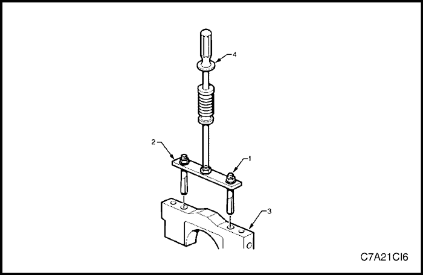
- Afloje las tuercas (1) del extractor de tapas de cojinete de bancada del cigüeñal, herramienta nº J-41818 (2), para separar los collares biselados. Monte los collares en los taladros de los tornillos interiores de la tapa del cojinete de bancada delantero (3).
- Apriete las tuercas del extractor hasta 11 N•m (97 lb-pulg.).
- Coloque un mazo de deslizamiento, herramienta nº J-6125-1B (4) en la tapa de bancada del cigüeñal y desmonte dicha tapa.
- Repita los pasos 9 a 13 para el resto de tapas de bancada del cigüeñal.
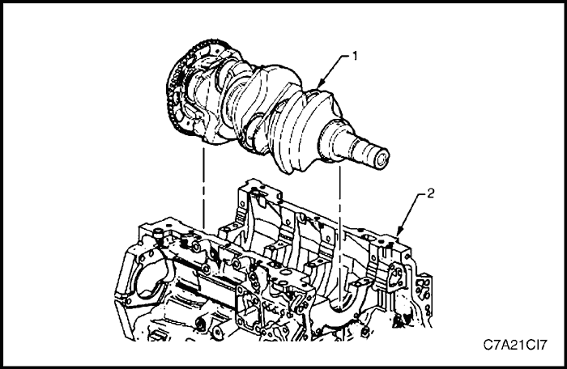
- Desmonte el cigüeñal (1) del bloque del motor (2), levantándolo de forma uniforme para evitar que se atore con el cojinete de empuje de bancada.
- Coloque el cigüeñal en un sitio seguro.
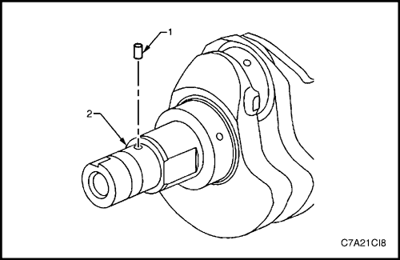
- Si fuera necesario, quite del cigüeñal (2) su pasador de accionamiento de la rueda dentada (1).
Medición del juego axial del cigüeñal
- Coloque un comparador en el extremo de la nariz del cigüeñal.
- Fuerce con suavidad el cigüeñal hacia la parte delantera y trasera del bloque de cilindros con una palanca al tiempo que observa el movimiento del comparador.
- El juego axial del cigüeñal no debe superar las especificaciones.
- Si se sobrepasan las especificaciones, compruebe el diámetro exterior de empuje del cojinete de empuje y la pared de empuje del cigüeñal en busca de desgaste y/o excentricidad excesiva. Compare los valores con las especificaciones.
- Sustituya el cojinete de empuje o el cigüeñal según sea necesario.
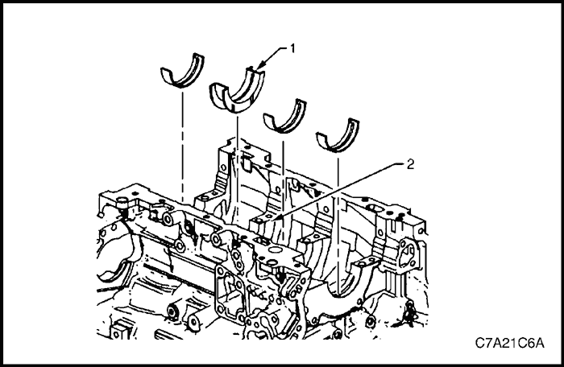
Cojinete del cigüeñal
- Prepare un trozo de cartón o similar numerado del 1 al 4 para identificar los cojinetes.
Nota: Los muñones de los cojinetes de bancada se numeran desde la parte delantera del motor.
- Desmonte del bloque de cilindros los semicojinetes de bancada. Tome nota de la posición del cojinete de empuje (1) en el muñón número 3 (2).
- Coloque los semicojinetes superiores de los cojinetes de bancada sobre el cartón en las posiciones correctas.
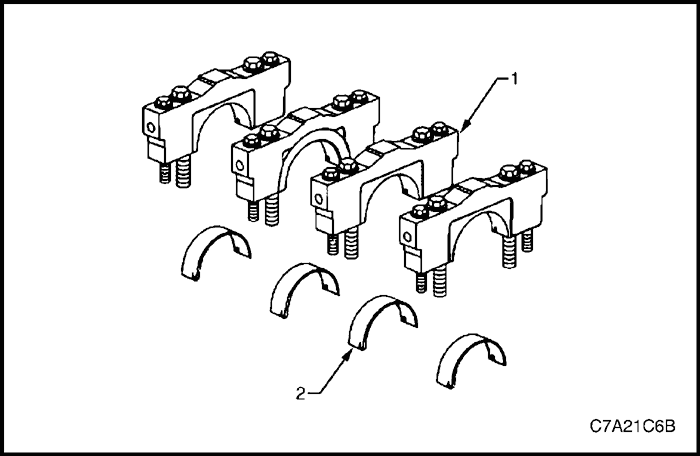
- Desmonte los semicojinetes inferiores de los cojinetes de bancada (2) de las tapas de bancada del cigüeñal (1).
- Coloque los semicojinetes inferiores de los cojinetes de bancada sobre el cartón en las posiciones correctas.
Limpieza e inspección
Limpieza de cojinetes de bancada y cigüeñal
- Limpie los siguientes componentes en disolvente y séquelos luego con aire comprimido.
- cojinetes de bancada,
- cojinetes de biela,
- muñones del cigüeñal,
- muñones de apoyo de bancada,
- conductos de engrase de cigüeñal y
- orificios roscados de cigüeñal.
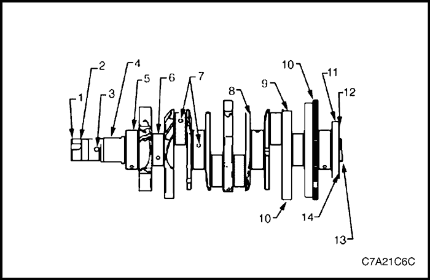
Inspección visual de cojinetes de bancada y cigüeñal
- Inspeccione visualmente lo siguiente:
- Compruebe si el taladro del tornillo (1) del equilibrador del cigüeñal tiene las roscas dañadas.
- Compruebe si la zona de fijación (2) del equilibrador del cigüeñal está dañada.
- Compruebe si el orificio del pasador de la rueda dentada del cigüeñal (3) está dañado.
- Compruebe si las caras planas del dispositivo de accionamiento de la bomba de aceite (4) están dañadas.
- Compruebe si los muñones de bancada del cigüeñal (5) están dañados.
- Compruebe si las muñequillas de biela del cigüeñal (6) están dañadas.
- Compruebe si los conductos de engrase del cigüeñal (7) están obstruidas.
- Compruebe si las superficies de las paredes de empuje de los cojinetes de bancada del cigüeñal (8) están dañadas.
- Compruebe si los contrapesos del cigüeñal (9) están dañados.
- Compruebe si los dientes del anillo del reluctor del cigüeñal (10) están dañados.
- Compruebe si la superficie del retén de aceite principal trasero del cigüeñal (11) está dañada.
- Compruebe si la superficie de fijación de la placa de flexible del motor del cigüeñal (12) está dañado.
- Compruebe si el orificio del piloto del cigüeñal (13) está dañado.
- Compruebe si los taladros de tornillo (14) del volante motor del cigüeñal tiene las roscas dañadas.
- Repare o sustituya el cigüeñal, según sea necesario.
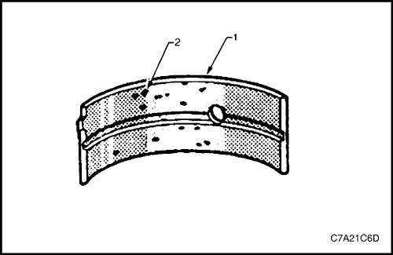
Inspección de cojinetes de bancada del cigüeñal
Precaución: Deben sustituirse todos los cojinetes lisos de bancada y de biela que se hayan usado en un motor que funcione. Nunca vuelva a utilizar cojinetes de biela o de bancada usados.
Nota: Deben tenerse en cuenta las siguientes condiciones de desgaste de los cojinetes para realizar el diagnóstico de las condiciones de funcionamiento del motor o determinar la causa de una anomalía.
- Compruebe si hay signos de fatiga indicados por surcos o cavidades (2). Las partes aplastadas de los semicojinetes (1) también indican fatiga.
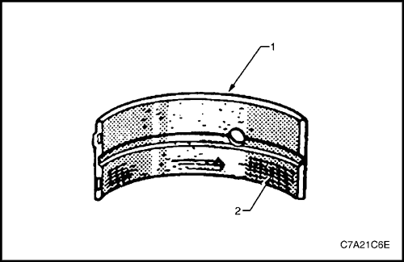
- Compruebe si tanto la parte delantera como trasera de los semicojinetes (1) están demasiado rayadas o descoloridas (2).
- Compruebe si los cojinetes de bancada tienen suciedad incrustada en su material.
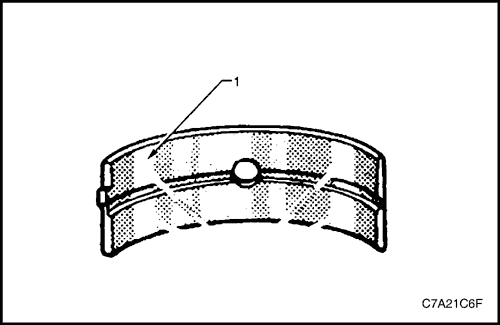
- Compruebe si los asientos no son correctos, lo cual puede verse en partes brillantes y pulidas (1).
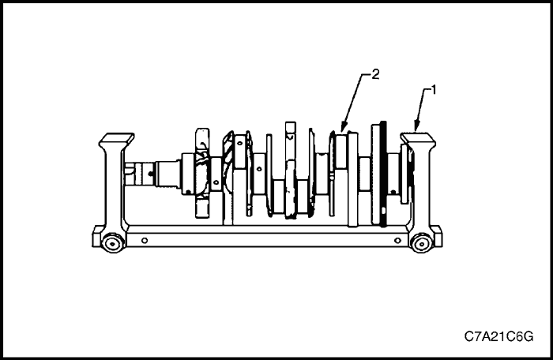
Medición del cigüeñal
- Use un útil de fijación (1) adecuado para sujetar el cigüeñal (2).
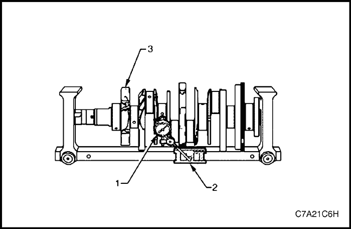
- Utilice un comparador (1) y una base magnética (2) para girar el cigüeñal (3) manualmente y con cuidado. Mida la excentricidad de los muñones de bancada del cigüeñal y compárela con la de las especificaciones del motor.
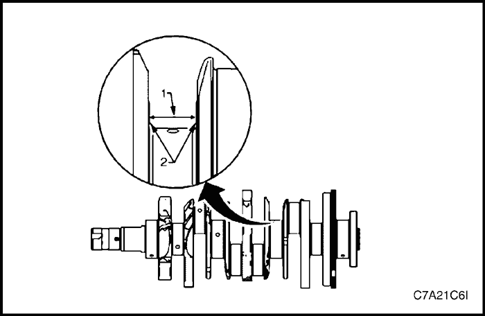
- Mida el desgaste de la pared de empuje del cigüeñal (1) con la ayuda de un micrómetro de interiores y compárelo con el de las especificaciones del motor.
- Mida la excentricidad de la superficie de la pared de empuje del cigüeñal (2) con la ayuda de un comparador montado en un soporte magnético y compárela con la de las especificaciones del motor.
- Si los muñones del cigüeñal están dañados o desgastados y no cumplen las especificaciones, debe rectificarse el cigüeñal 0,25 mm. Sólo hay un tamaño de sobremedidas para cojinetes de bancada disponible para servicio.
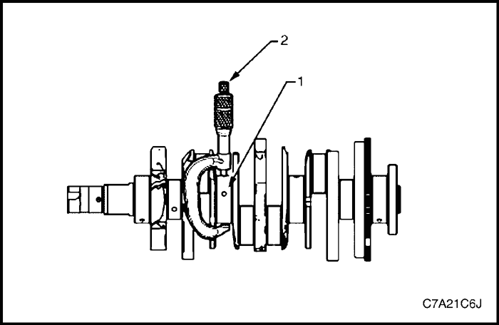
- Use un micrómetro de exteriores (2) para comprobar si las dimensiones de los muñones de bancada del cigüeñal (1) son inferiores a las especificadas.
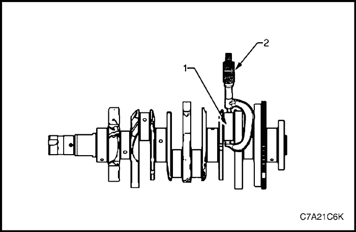
- Use un micrómetro de exteriores (2) para comprobar si las dimensiones de los apoyos de bancada (1) son inferiores a las especificadas.
- Compare sus mediciones con las incluidas en las especificaciones del motor. Si los muñones de los apoyos de bancada están desgastados y no cumplen las especificaciones, debe rectificarse el cigüeñal 0,25 mm. Sólo hay un tamaño de sobremedidas para cojinetes de biela disponible para servicio.
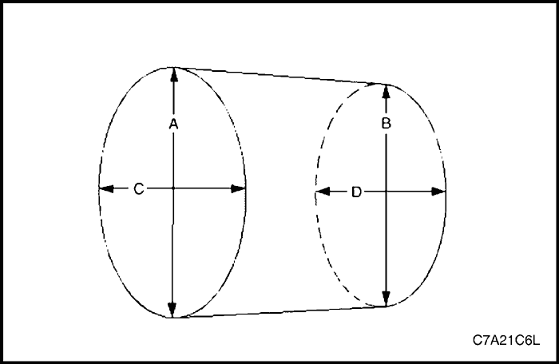
- Emplee el siguiente procedimiento para medir la ovalización de los muñones de los apoyos y cojinetes de bancada:
- a. Use un micrómetro de exteriores para medir el muñón en las partes delantera y trasera extremas del muñón. Denomine a estos puntos A y B.
- b. Mida el muñón en dos sitios nuevos exactamente a 90 grados de los primeros puntos. Llame a estos puntos C y D.
- c. Reste A a C y B a D. Las diferencias indicarán la ovalización del muñón.
- d. La ovalización no debe superar los 0,004 mm como máximo.
- e. Si los muñones están tan desgastados que no cumplen las especificaciones, debe rectificarse el cigüeñal 0,25 mm. Sólo hay un tamaño de sobremedidas para cojinetes de biela y de bancada disponible para servicio.
- Si los muñones están tan desgastados que no cumplen las especificaciones, debe rectificarse el cigüeñal 0,25 mm. Sólo hay un tamaño de sobremedidas para cojinetes de biela y de bancada disponible para servicio.
- a. Use un micrómetro de exteriores para medir el muñón en las partes delantera (A) y trasera (B) extremas del muñón, paralelamente al eje del cigüeñal.
- b. Reste la medición menor a la mayor. El resultado será la conicidad del muñón.
- c. Si la conicidad del muñón del cojinete de bancada supera los 0,004 mm, sustituya el cigüeñal.
- d. Si los muñones están tan desgastados que no cumplen las especificaciones, debe rectificarse el cigüeñal 0,25 mm. Sólo hay un tamaño de sobremedidas para cojinetes de biela y de bancada disponible para servicio.
procedimiento de montaje
Procedimiento de montaje de cojinetes de bancada
Precaución: Si los cojinetes de bancada se usan en un motor que funciona, sustitúyalos por cojinetes nuevos al volverlos a montar.
- Limpie la superficie interior del cárter motor con un paño que no suelte pelusa.
- Limpie todo el aceite de la parte trasera de los semicojinetes nuevos.
- Coloque los semicojinetes superiores nuevos en su sitio. El cojinete de empuje (1) corresponde al muñón número 3 (2). Asegúrese de que el inserto del cojinete superior tiene la ranura y el orificio de transferencia de aceite. Ponga el cojinete en su sitio de modo que espigas de bloqueo se enganchen en la ranura del cigüeñal. El cojinete debe acoplarse y quedar a nivel con el cárter motor superior.
- Monte los semicojinetes inferiores de bancada (2) en su sitio en las tapas de cojinete de bancada (1). Los semicojinetes inferiores de bancada se reconocen por no tener ranuras ni orificios. Los cojinetes deben acoplarse y quedar a nivel con las tapas de bancada del cigüeñal.
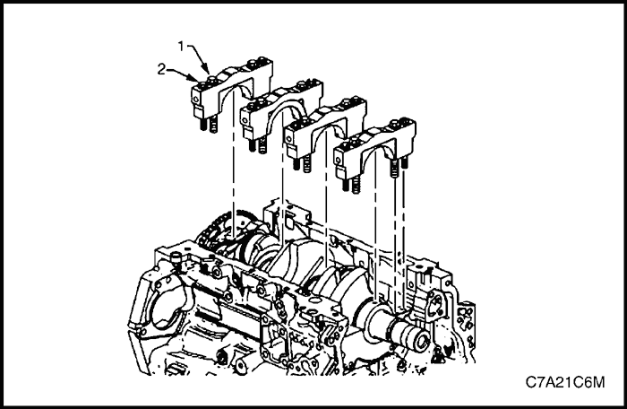
Medición de la holgura de los cojinetes de bancada del cigüeñal
- Coloque material de plástico de calibración a temperatura ambiente fresca a lo largo de los muñones de cojinete del cigüeñal.
- Monte las tapas de los cojinetes de bancada del cigüeñal.
- Coloque sin apretar los tornillos interiores originales (1) de las tapas de bancada.
- Coloque sin apretar los tornillos exteriores originales (2) de las tapas de bancada.
- Coloque sin apretar los tornillos laterales interiores/cortos originales de las tapas de bancada.
- Coloque sin apretar los tornillos laterales exteriores/largos originales (3) de las tapas de bancada.
- Golpee ligeramente las tapas de los cojinetes de bancada con un martillo de cara blanda para ayudar a que las tapas se asienten.
- Apriete los tornillos de las tapas de bancada.
Apretar
- Apriete el tornillo de fijación interior de la tapa de cojinete de bancada del cigüeñal hasta 20 N•m (15 lb-pie) más otros 80°.
- Apriete el tornillo de fijación exterior de la tapa de cojinete de bancada del cigüeñal hasta 15 N•m (11 lb-pie) más otros 110°.
- Apriete el tornillo de fijación lateral de la tapa de cojinete de bancada del cigüeñal hasta 30 N•m (22 lb-pie) más otros 60°.
Nota: No gire el cigüeñal.
- Deje que el conjunto se asiento 2 minutos.
- Quite los tornillos laterales de la tapa de bancada del cigüeñal.
- Quite los tornillos exteriores de la tapa de bancada del cigüeñal (2).
- Quite los tornillos interiores de la tapa de bancada del cigüeñal (1).
- Instale el extractor de tapas de cojinete de bancada del cigüeñal, herramienta nº J-41818 descrita anteriormente, y desmonte la tapa de bancada.
- Repita los pasos 10 a 13 para el resto de tapas de bancada del cigüeñal.
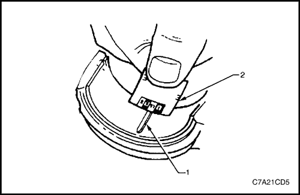
- Determine la holgura del cojinete del cigüeñal comparando la anchura del material de plástico de calibración aplastado (1) por su punto más ancho con la graduación indicada en la escala de dicho material de calibración (2).
- Compare con las mediciones incluidas las especificaciones. Si los cojinetes nuevos no dan la holgura correcta entre cigüeñal y cojinete, compruebe lo siguiente:
- a. Mida si los muñones del cigüeñal tienen las dimensiones especificadas correctas y asegúrese de que se monten cojinetes nuevos adecuados. Si los muñones del cigüeñal no tienen las dimensiones correctas, sustituya o rectifique el cigüeñal. Se permite el mecanizado del cigüeñal y hay disponibles cojinetes de dimensiones inferiores.
- b. Mida el diámetro del alojamiento del cojinete del cigüeñal para asegurarse de que tiene las dimensiones correctas. El alojamiento del cojinete del cigüeñal del bloque del motor no se puede mecanizar y debe sustituirse el bloque si está fuera de las especificaciones.
- Limpie el material de plástico de calibración de los muñones de cojinete de cigüeñal con un paño suave libre de pelusa.
Procedimiento de montaje final del cigüeñal
- Si se ha quitado, coloque el pasador de accionamiento de la rueda dentada del cigüeñal (1). Golpee ligeramente el pasador en su sitio con un martillo pequeño de bronce o plástico de cara blanda hasta que llegue al fondo de su orificio.
Precaución: Asegúrese de que se ha desmontado el sensor de posición del cigüeñal del bloque de cilindros antes de cargar el cigüeñal, ya que el sensor podría resultar dañado.
- Ponga una cantidad generosa de aceite de motor limpio en las superficies de los semicojinetes superiores e inferiores.
- Baje con cuidado el cigüeñal (1) hasta su sitio en el bloque de cilindros (2).
- Monte las tapas de los cojinetes de bancada del cigüeñal.
- Coloque sin apretar los tornillos interiores originales (1) de las tapas de bancada.
Precaución: Los tornillos exteriores (2) de las tapas de bancada del cigüeñal ceden al apretarse durante el montaje y deben sustituirse antes de volver a montar. Los tornillos exteriores de las tapas de bancada del cigüeñal que no se sustituyan no estarán apretados según la carga correcta de sujeción y pueden dar lugar a graves daños del motor.
- Afloje los tornillos exteriores nuevos (2) de las tapas de bancada.
- Golpee ligeramente las tapas de los cojinetes de bancada con un martillo de cara blanda para ayudar a que las tapas se asienten.
Precaución: Los tornillos laterales interiores/cortos de las tapas de bancada llevan originalmente un sellante en la brida de la cabeza del tornillo. Deben usarse tornillos nuevos. Si no se utilizan tornillos nuevos, puede haber fugas de aceite en el cárter motor pasados los tornillos.
- Coloque sin apretar los tornillos laterales interiores/cortos (4) de las tapas de bancada.
Precaución: Los tornillos laterales exteriores/largos de las tapas de bancada llevan originalmente un sellante en la brida de la cabeza del tornillo. Deben usarse tornillos nuevos. Si no se utilizan tornillos nuevos, puede haber fugas de aceite en el cárter motor pasados los tornillos.
- Coloque sin apretar los tornillos laterales exteriores/largos nuevos (3) de las tapas de bancada.
- Apriete los tornillos de las tapas de bancada.
Apretar
- Apriete el tornillo de fijación interior de la tapa de cojinete de bancada del cigüeñal hasta 20 N•m (15 lb-pie) más otros 80°.
- Apriete el tornillo de fijación exterior de la tapa de cojinete de bancada del cigüeñal hasta 15 N•m (11 lb-pie) más otros 110°.
- Apriete el tornillo de fijación lateral de la tapa de cojinete de bancada del cigüeñal hasta 30 N•m (22 lb-pie) más otros 60°.
- Asegúrese de que el cigüeñal gira sin agarrotarse y sin hacer ruido.
- Monte los demás componentes en el orden inverso al de desmontaje, consulte la Sección pertinente.
 | |  | |
| © Copyright Chevrolet Europe. Reservados todos los derechos |